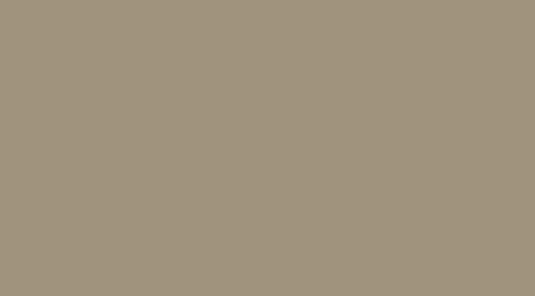
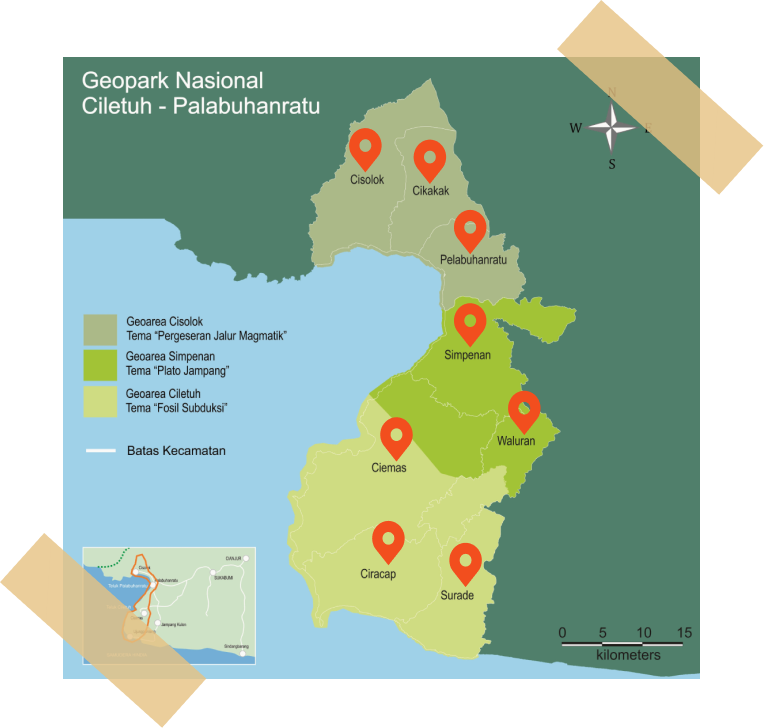
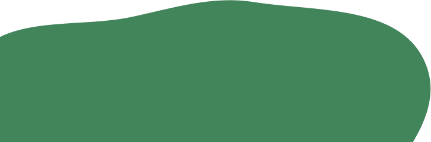
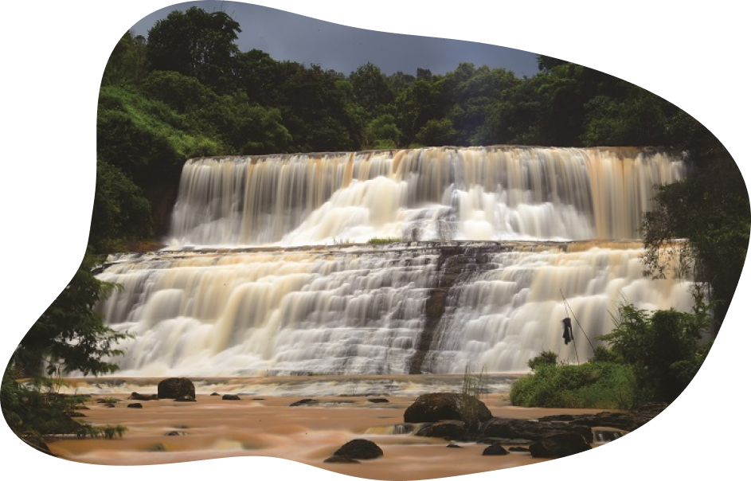

Geopark Ciletuh-Palabuhanratu
Unesco Global Geopark
Lokasi
Geopark Ciletuh terletak di daerah Ciletuh
yang berada di sepanjang pesisir pantai
selatan-barat Sukabumi, Kecamatan
Ciemas, Jawa Barat.



CURUG PUNCAK JERUK
Curug ini berada pada aliran sungai
yang terletak di Desa Mekarjaya.
Akses menuju curug ini harus ditempuh
dengan berjalan kaki sekitar 20 menit
melalui jalan setapak dari jalan Desa
Mekarjaya yang berbatasan
dengan Kecamatan Waluran.
PULAU MANDRA


Pulau dengan luas kurang dari
1 km2 ini terletak di Desa Mandrajaya.
Akses menuju pulau sekitar 3 menit de-
ngan perahu dari muara Sungai Ciletuh.
Pulau ini populer sebagai tempat
memancing bagi penduduk lokal.
GUA LAUT SODONG PARAT


Gua Laut Sodong Parat terletak di
tanjung jauh dari Pantai Cikepuh.
Gua ini menembus sisi lain dari
tebing dengan panjang gua
mencapai 7 meter. Gua ini dapat
dilalui dengan menaiki perahu
ketika pasang.
BENTANG ALAM GIRIMUKTI


Pemandangan Teluk Ciletuh ini
dapat dilihat dari Pucakdarma,
dan Cikalapa Desa Girimukti. Akses
dapat ditempuh dengan mobil atau
sepeda motor selama 15 menit dari
Pantai Palangpang di Desa Ciwaru
dengan kondisi jalan mendaki. Juga
dapat ditempuh dari jalan utama
Desa Girimukti.
BATU PUNGGUNG NAGA


Komplek batuan yang menyerupai
duri-duri punggung naga dapat diakses
berjalan kaki selama 20 menit dari
Pantai Batu Nuggul. Komplek batuan ini
merupakan lokasi paling ideal untuk
mempelajari secara khusus tentang
batuan sendimen batupasir kuarsa
yang merupakan bagian dari formasi
Ciletuh yang berumur Eosen